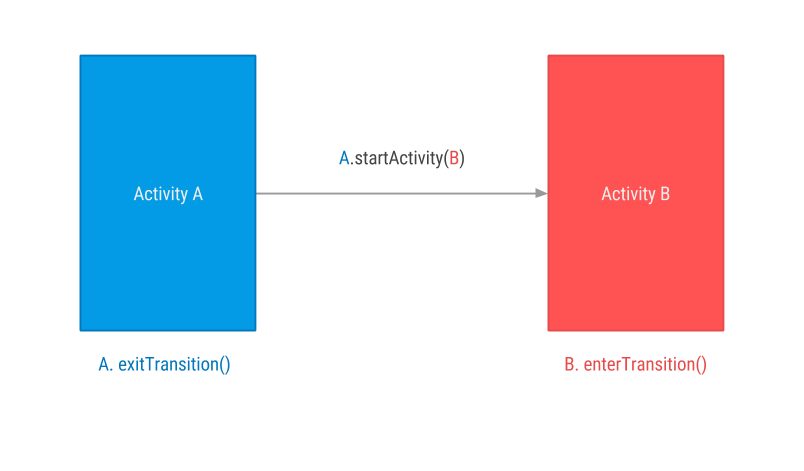
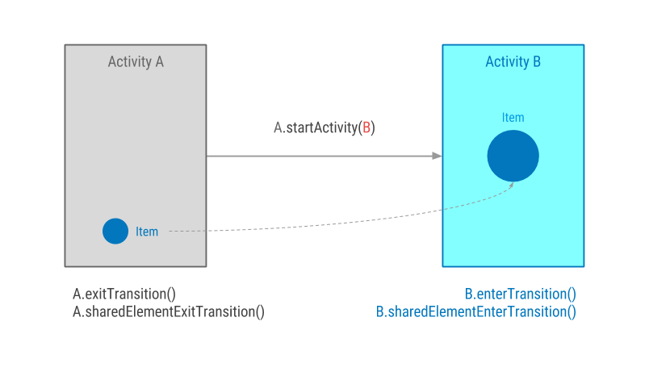
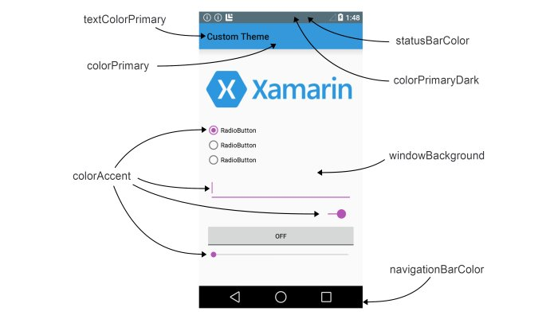

Android高级进阶笔记
[TOC]
基础篇
动画机制
帧动画 Frame Animation
使用xml文件配置<animation-list>
使用代码方式
1 2 3 4
| AnimationDrawable.addFrame(drawable, 120) imageView.setBackgroundDrawable(animationDrawable); animationDrawable.start(); animationDrawable.stop();
|
补间动画 Tween Animation
插值器Interpolator
AlphaAnimation : <alpha
ScaleAnimation : <scale
TranslateAnimation : <translate
RotateAnimation : <rotate
自定义补间动画
1 2 3 4 5 6
| public class MyAnimation extends Animation { @Override protected void applyTransformation(float interpolatedTime, Transformation transformation) { super...(); } }
|
重载函数参数：interpolatedTime表示动画的时间进行比例，从0到1；transformation表示补间动画在不同时刻对View的变形程度。
属性动画 Property Animator
1 2 3 4 5 6 7 8 9 10 11 12 13
| private void perform() { ViewGroup viewGroup = (ViewGroup) findViewById(android.R.id.content); final View contentView = viewGroup.getChildAt(0); ValueAnimator valueAnimator = ValueAnimator.ofObject(new ArgbEvaluator(), 0xffffffff, 0xff555555); valueAnimator.addUpdateListener(new ValueAnimator.AnimatorUpdateListener() { @Override public void onAnimationUpdate(ValueAnimator animation) { contentView.setBackgroundColor((Integer) animation.getAnimatedValue()); } }); valueAnimator.setDuration(2000).setStartDelay(1000); valueAnimator.start(); }
|
这里需要注意下的是int色值要用16进制，且八位，前两个是alpha透明度。argb依次类推。
ObjectAnimator是ValueAnimator的子类。一般只有ObjectAnimator实现不了的才考虑使用ValueAnimator。
属性动画，顾名思义，就是对象的属性，对象的属性就是指setXXX的方法，当然java命名要规范，按照驼峰，当给ObjectAnimator指定属性名的时候第一个字母小写。
ObjectAnimator即可以代码写，也可以通过xml配置。
过渡动画 Transition Animation
Android Transition Framwork 主要用来做三件事：
- Activity间的转场动画；
- 不同Activity或Fragment间元素共享，让交互更连贯；
- 同一个Activity之间一些View的变换动画。

当从ActivityA切换到ActivityB时我们可以跟以前一样分别定义A的退出动画和B的进入动画，5.0之后android.transition.Transition提供给我们三个可以直接使用的transition：Explode,Slide,Fade.
而你需要做的，首先对Activity的ThemeStyle添加windowContentTransitions属性：
1 2 3 4 5 6 7
| <style name="ActivityTheme" parent="Theme.AppCompat.Light.DarkActionBar"> <!-- 允许使用transitions --> <item name="android:windowContentTransitions">true</item> <!--是否覆盖执行，其实可以理解成是否同步执行还是顺序执行--> <item name="android:windowAllowEnterTransitionOverlap">true</item> <item name="android:windowAllowReturnTransitionOverlap">true</item> </style>
|
如果你的minSdkVersion低于21，则需要把上述配置放在values-v21资源包下。
ActivityA
1 2 3 4 5 6 7 8 9 10 11 12 13 14 15 16 17 18 19 20 21 22 23 24 25 26 27 28 29
| private void configExitTransition() { if (android.os.Build.VERSION.SDK_INT >= android.os.Build.VERSION_CODES.LOLLIPOP) { Slide slide = new Slide(); slide.setDuration(800); getWindow().setExitTransition(slide); } } public void explode(View view) { startActivityBWithTransitionAnima("explode"); } public void slide(View view) { startActivityBWithTransitionAnima("slide"); } public void fade(View view) { startActivityBWithTransitionAnima("fade"); } private void startActivityBWithTransitionAnima(String transitionName) { Intent intent = new Intent(this, ActivityB.class); intent.putExtra("transition", transitionName); if (Build.VERSION.SDK_INT >= Build.VERSION_CODES.JELLY_BEAN) { startActivity(intent, ActivityOptionsCompat.makeSceneTransitionAnimation(this).toBundle()); } else { startActivity(intent); } }
|
ActivityB
1 2 3 4 5 6 7 8 9 10 11 12 13 14 15 16 17 18 19 20 21 22 23 24 25 26
| private void handleIntent() { Intent intent = getIntent(); if (intent != null && intent.getExtras() != null) { String transition = intent.getExtras().getString("transition", "fade"); if (transition.equals("explode")) { if (Build.VERSION.SDK_INT >= Build.VERSION_CODES.LOLLIPOP) { Explode explode = new Explode(); explode.setDuration(1000); getWindow().setEnterTransition(explode); } } else if (transition.equals("slide")) { if (Build.VERSION.SDK_INT >= Build.VERSION_CODES.LOLLIPOP) { Slide slide = new Slide(Gravity.RIGHT); slide.setDuration(1000); getWindow().setEnterTransition(slide); } } else if (transition.equals("fade")) { if (Build.VERSION.SDK_INT >= Build.VERSION_CODES.LOLLIPOP) { Fade fade = new Fade(); fade.setDuration(1000); getWindow().setEnterTransition(fade); } } } }
|
让我们来分析以下具体发生了什么：
- 首先ActivityA启动了ActivityB；
- Transition Framework找到A的退出动画（Slide）并且应用；
- Transition Framework找到B的进入动画（Explode）并且应用；
- 返回事件被触发后，Transition Framework执行进入动画和退出动画的逆向过程（但是如果我们定义了returnTransition和reenterTransition动画，返回效果将会按照我们定义的动画执行）。
元素共享

- 首先我们需要做的仍然是去定义Theme的android:windowContentTransitions为true；
- 然后对不同activity或fragment的共享的view元素设置统一的 android:transitionName：
- 使用ActivityOptions.makeSceneTransitionAnimation()来定义共享的view和transitionName
1 2 3
| mIntent.setClass(this, ShareElementsActivity.class); ActivityOptions transitionActivityOptions = ActivityOptions.makeSceneTransitionAnimation(MainActivity.this, findViewById(R.id.img_share), "share"); startActivity(mIntent, transitionActivityOptions.toBundle());
|
1 2 3 4 5 6 7 8 9 10 11 12 13
| Slide slideTransition = new Slide(Gravity.LEFT); slideTransition.setDuration(1000L); ChangeBounds changeBoundsTransition = new ChangeBounds(); changeBoundsTransition.setDuration(1000L); sharedElementFragment2.setEnterTransition(slideTransition); sharedElementFragment2.setAllowEnterTransitionOverlap(true); sharedElementFragment2.setAllowReturnTransitionOverlap(true); sharedElementFragment2.setSharedElementEnterTransition(changeBoundsTransition); getFragmentManager().beginTransaction() .replace(R.id.framelayout_container, sharedElementFragment2) .addToBackStack(null) .addSharedElement(sharedView, "share") .commit();
|
如果两个不同界面有多个元素需要共享的话，使用Pair来包装
1 2 3 4 5
| mIntent.setClass(this, ShareElementsActivity.class); ActivityOptions transitionActivityOptions = ActivityOptions.makeSceneTransitionAnimation(MainActivity.this , Pair.create(findViewById(R.id.img_share), "share") , Pair.create(findViewById(R.id.tv_share), "share_text")); startActivity(mIntent, transitionActivityOptions.toBundle());
|
Support Annotation Library使用
Android Support Library中有个support-annotations帮助我们完善自身代码质量。
support-annotation里的注解的RetentionPolicy是CLASS级别的，即会编译到.class中，但在运行中获取不到。也是默认的级别。
资源类型注解
比如：@LayoutRes, @IdRes, @ColorRes等
类型定义注解
- @IntDef/@StringDef 用来创建一个整型/字符串类型定义的新注解
1 2 3 4 5 6 7 8 9 10 11 12 13 14 15
| Retention(RetentionPolicy.SOURCE) @IntDef({ONE, THREE, TWO}) public @interface NavMode {} public static final int ONE = 1; public static final int TWO = 2; public static final int THREE = 3; @NavMode private int getMode() { int i = 9; int b = 2; i = i + b; return i; }
|
线程注解
- @UIThread @MainThread @WorkerThread @BinderThread
RGB色值注解
值范围注解
@Size 对于数组、集合、字符串之类的参数，可以使用该注解表示这些参数的大小
@Size(min=1),@Size(max=23),@Size(2), @Size(multiple=2)可以表示数组大小是2的倍数
@IntRange 参数类型int或long的范围
@IntRange(from=0,to=255)
同理 @FloatRange
权限注解
为了在编译期及时发现缺失的权限，使用@RequestPermission
@RequestPermission(Manifest.permission.SET_WALLPAPER)
RequestPermission(anyOf = {Manifest.permission.SET_WALLPAPER, Manifest.permission.SET_WALLPAPER}) 至少一个权限
RequestPermission(allOf = {Manifest.permission.SET_WALLPAPER, Manifest.permission.SET_WALLPAPER}) 同时声明多个权限
重写函数注解
如果重写函数希望调用super，则可以用@CallSuper
返回值注解
CheckResult (suggest=”#提示信息”)
调用该函数的返回值需要检查
@VisibleForTesting
@Keep不被混淆
使用了support-annotation的库工程，生成的aar会将annotation的信息一起打包到aar里，以便调用者正常使用。
Percent Support Library使用详解
添加依赖compile 'com.android.support:percent:23.4.0'
提供了PercentRelativeLayout、PercentFrameLayout。可以很方便的使用百分比布局。
有以下属性：
layout_widthPercent、layout_heightPercent、 layout_marginPercent、layout_marginLeftPercent、 layout_marginTopPercent、layout_marginRightPercent、 layout_marginBottomPercent、layout_marginStartPercent、layout_marginEndPercent。
添加对LinearLayout的支持
https://github.com/JulienGenoud/android-percent-support-lib-sample
扩充了support-percent的功能
https://github.com/hongyangAndroid/android-percent-support-extend
Design Support Library 使用详解
Design Support Library可以使开发者在Android2.1以上的设备实现Material Design效果
1 2 3
| dependencies { compile 'com.android.support:design:23.4.0' }
|
Snackbar
类似Toast提示功能。
1 2 3 4 5 6 7 8 9 10 11 12 13 14 15 16 17 18 19
| Snackbar snackbar = Snackbar.make(getWindow().getDecorView(), "消息内容:最多显示两行最多", Snackbar.LENGTH_SHORT); snackbar.setAction("确定", new View.OnClickListener() { @Override public void onClick(View view) { Toast.makeText(ActivitySnackbar.this, "-", Toast.LENGTH_SHORT).show(); } }); snackbar.setCallback(new Snackbar.Callback() { @Override public void onDismissed(Snackbar snackbar, int event) { ToastUtil.toast("消失了"); } @Override public void onShown(Snackbar snackbar) { ToastUtil.toast("出现了"); } }); snackbar.show();
|
第一个参数需要传入一个View，可以是界面当中的任意一个View控件，Snackbar会自动根据这个控件找到最外层的布局来显示
第二个参数就是我们需要显示的内容，注意这里的内容最多显示两行哦，超出两行后的内容会变成“…”
第三个参数为Snackbar显示的时长，有三种模式供选择
LENGTH_SHORT：短时间显示
LENGTH_LONG：长时间显示
LENGTH_INDEFINITE：一直显示，只有当用户触发Action点击事件或手动删除时才会消失
Snackbar还支持滑出删除，需要在布局文件中使用CoordinatorLayout作为根布局
建议要使用Snackbar的时候最好是以CoordinatorLayout作为根布局，如果以其它RelativeLayout，LinearLayout等作为根布局的话，会出现以下这种情况
http://img.blog.csdn.net/20160825112508891
FloatingActionButton被遮到了，使用CoordinatorLayout作为根布局可以避免这种情况
http://img.blog.csdn.net/20160825113217112
Snackbar只能在底部显示吗？
是也不是，为啥这么说呢，Snackbar确实是在CoordinatorLayout底部显示的，但并不等于是在屏幕顶部。这个要查看Snackbar的源代码才能知道为什么，Snackbar会显示在传入的View的底部。
可以根据snackbar.getView()获取到Snackbar的布局，从而修改这个布局的一些样式。
TextInputLayout
1 2 3 4 5 6 7 8 9
| <android.support.design.widget.TextInputLayout android:id="@+id/textinputlayout" android:layout_width="200dp" android:layout_height="wrap_content" android:layout_margin="20dp"> <EditText android:layout_width="match_parent" android:layout_height="50dp"/> </android.support.design.widget.TextInputLayout>
|
需要通过代码设置setHint动画才能生效
1 2 3 4 5 6 7 8 9
| private void initTextInputLayout() { mTextInputLayout = (TextInputLayout) findViewById(R.id.textinputlayout); mTextInputLayout.setHint("测试一下textinputlayout的特性hint"); mTextInputLayout.clearFocus(); } public void onClick(View view) { mTextInputLayout.setErrorEnabled(true); mTextInputLayout.setError("错误了"); }
|
使用TextInputLayout感觉比较麻烦的是修改它的样式
取消动画
可以通过TextInputLayout对象，执行setHintAnimationEnabled(boolean enabled)方法,或者在xml里添加hintAnimationEnabled属性设置
设置hint移动到上方以后的颜色和字体大小
在XML里对应的TextInputLayout标签下添加hintTextAppearance属性
1 2 3 4 5 6
| <android.support.design.widget.TextInputLayout …… xmlns:app="http://schemas.android.com/apk/res-auto"app:hintTextAppearance="@style/FloatingStyle"> <EditText …… /> </android.support.design.widget.TextInputLayout>
|
然后在res->values->styles.xml下添加一个style
1 2 3 4 5 6
| <style name="FloatingStyle" parent="@android:style/TextAppearance"> <!-- 字体颜色 --> <item name="android:textColor">#AA00FF</item> <!-- 字体大小 --> <item name="android:textSize">20sp</item> </style>
|
设置下划线的颜色
修改res->values->styles.xml下”AppTheme”里的colorAccent属性
1 2 3 4 5 6
| <!-- Base application theme. --> <style name="AppTheme" parent="Theme.AppCompat.Light.DarkActionBar"> <!-- Customize your theme here. --> …… <item name="colorAccent">#0000FF</item> </style>
|
谷歌把Design Support Library写的很好。每一个控件的颜色都是直接通过主题颜色绘制的，在 style.xml 中指定。打开它添加colorAccent 到主题以改变表单的颜色。在 style.xml 中修改相关的属性
1 2 3 4 5 6 7 8 9 10 11
| <style name="AppTheme" parent="Theme.AppCompat.Light.NoActionBar"> <item name="colorPrimary">@color/primary</item> <item name="colorPrimaryDark">@color/primary_dark</item> <!--<item name="colorAccent">#3498db</item>--> <item name="android:textColorHint">@color/alpha_white</item> <item name="colorControlNormal">@color/alpha_white</item> <item name="colorControlActivated">@color/white</item> <item name="colorControlHighlight">@color/white</item> <item name="android:windowTranslucentStatus">true</item> </style>
|

这张图片基本说明了colorAccent 代表的颜色，而在google 的官网上：
https://www.google.com/design/spec/style/color.html#color-color-schemes 也有相关的说明
android:textColorHint 代表 hint 的颜色
colorControlNormal 代表 下划线没有获取焦点的颜色
colorControlActivated，colorControlHighlight 代表了获取焦点或者点击的时候 下划线 的颜色
错误提示的颜色说明
在设置布局的时候errorTextAppearance这个属性，自定义style 写颜色和大小就可以了，至于另一个属性hintTextAppearance 这个属性修改颜色，好像没有什么效果，不起作用。
有的机器上面可能没有效果，下面提供一种解决方案：
1 2 3 4 5 6 7 8 9 10 11 12
| public static void setErrorTextColor(TextInputLayout textInputLayout, int color) { try { Field fErrorView = TextInputLayout.class.getDeclaredField("mErrorView"); fErrorView.setAccessible(true); TextView mErrorView = (TextView) fErrorView.get(textInputLayout); Field fCurTextColor = TextView.class.getDeclaredField("mCurTextColor"); fCurTextColor.setAccessible(true); fCurTextColor.set(mErrorView, color); } catch (Exception e) { e.printStackTrace(); } }
|
需要注意的是：
setErrorTextColor(titleTextInput,getResources().getColor(R.color.grey));
需要在titleTextInput.setErrorEnabled(true);之前调用
这个是 material design 的说明文档，收藏记录下：
https://www.google.com/design/spec/components/text-fields.html#text-fields-multi-line-text-field
TabLayout
该控件的使用方式就更简单了，主要是实现类似网易新闻头部可滚动的tab了，没出来前都用github上的。
主要关于TabLayout和ViewPager结合使用
1 2 3 4 5 6 7 8
| FragmentAdapter mFragmentAdapteradapter = new FragmentAdapter(getSupportFragmentManager(), fragments, titles); //给ViewPager设置适配器 mViewPager.setAdapter(mFragmentAdapteradapter); //将TabLayout和ViewPager关联起来。 mTabLayout.setupWithViewPager(mViewPager); //给TabLayout设置适配器 mTabLayout.setTabsFromPagerAdapter(mFragmentAdapteradapter);
|
TabLayout不仅头部导航，也可作为底部导航哦！
ANR产生的原因及其定位分析
- ANR产生的原因
只有当UI线程响应超时时才会引起ANR，超时产生的原因主要有两个方面：
- 当前事件没有机会得到处理，例如UI线程正在响应另外一个事件，当前事件被阻塞。
- 当前事件正在处理，但由于耗时太长没及时处理完。
根据ANR产生的原因不同，超时事件也不尽相同。产生ANR问题原因有三种，分别对应Android四大组件中的三个(Activity/View，BroadcastReceiver，Service)
KeyDispatchTimeout : 5秒内无法得到响应
BroadcastTimeout ：onReceive()函数运行在主线程，10秒内无法处理完成
ServiceTimeout ：各个生命周期函数，20秒内无法完成
- 典型ANR问题场景
- UI线程耗时操作
- UI线程等待子线程释放某个锁
- 耗时的动画，需要大量运算，导致CPU负载过重
ANR问题定位和分析
当发生ANR的时候，可以结合控制台里的Logcat的日志信息和生成在手机内部存储的/data/anr/xxx.txt文件进行分析和定位。
ANR避免和检测
可以借助工具进行检测，从而避免ANR的引入。
StrictMode严格模式，主要用来检测两大类问题
线程策略 ThreadPolicy
detectCustomSlowCalls 检测自定义耗时操作
detectDiskReads 检测是否存在磁盘读取操作
detectDiskWrites 检测是否存在磁盘写入操作
detectNetwork 检测是否存在网络操作
虚拟机策略 VmPolicy
detectActivityLeaks 检测是否存在Activity泄漏
detectLeakeddClosableObjects 检测是否存在未关闭的Closable对象泄漏
detectLeakedSqLiteObjects 检测是否存在Sqlite对象泄漏
setClassInstanceLimit 检测类实例个数是否超过限制
直接通过代码开启，在应用的启动初始化的地方执行如下代码：
1 2 3 4 5 6
| if (BuildConfig.DEBUG) { //开启线程模式 StrictMode.setThreadPolicy(new StrictMode.ThreadPolicy.Builder().detectAll().penaltyLog().build()); //开启虚拟机模式 StrictMode.setVmPolicy(new StrictMode.VmPolicy.Builder().detectAll().penaltyLog().build()); }
|
当然可以根据自己的情况detect对应的信息。
github上有个开源的监测UI卡顿的库，BlockCanary，它的原理是利用主线程的消息队列处理机制，通过对比消息分发开始和结束的时间点来判断是否超过设定的时间。
通过在build.gradle配置中添加
https://github.com/markzhai/AndroidPerformanceMonitor
1 2 3 4 5 6 7 8
| dependencies { // most often used way, enable notification to notify block event compile 'com.github.markzhai:blockcanary-android:1.4.0' // this way you only enable BlockCanary in debug package // debugCompile 'com.github.markzhai:blockcanary-android:1.4.0' // releaseCompile 'com.github.markzhai:blockcanary-no-op:1.4.0' }
|
具体用法可以根据上面git的地址查看。
Android异步处理技术
IntentService
IntentService是继承自Service的，从源码上看，它是Service、HandlerThread和Handler的强强联合。源码也比AsyncTask简单，有兴趣的童鞋可以去看看。
再介绍另一个很有意思的方法，setIntentRedelivery()。从字面理解是设置intent重投递。如果设置为true，onStartCommand(Intent, int, int)将会返回START_REDELIVER_INTENT，如果onHandleIntent(Intent)返回之前进程死掉了，那么进程将会重新启动，intent重新投递，如果有大量的intent投递了，那么只保证最近的intent会被重投递。这个机制也很好，大家可以尝试着用。
这个机制可以用来处理后台进程被kill掉然后再重现执行相关app逻辑功能，感觉好流氓
https://www.zhihu.com/question/28364663
1 2 3 4 5 6 7 8 9 10 11 12 13 14 15 16 17 18 19 20 21 22 23 24 25 26 27 28 29 30 31
| public class SimpleIntentService extends IntentService { public SimpleIntentService() { super(SimpleIntentService.class.getName()); setIntentRedelivery(true); } @Override public int onStartCommand(Intent intent, int flags, int startId) { startActivity(); return super.onStartCommand(intent, flags, startId); } @Override protected void onHandleIntent(Intent intent) { while (true) { } } boolean isStarted = false; private void startActivity() { if (!isStarted) { Intent intent = new Intent(getApplicationContext(), MainActivity.class); intent.setFlags(Intent.FLAG_ACTIVITY_NEW_TASK); getApplicationContext().startActivity(intent); isStarted = true; } } }
|
代码试过了，用android自带的清除快捷方式结束进程，确实可以打开。但是进入到手机设置应用里强行停止却打不开了。
PS: https://www.zhihu.com/question/34652589